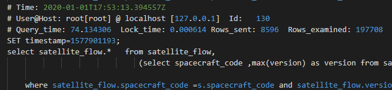
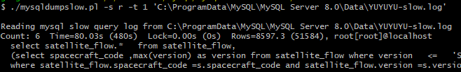

获取有性能问题的 SQL
慢查询日志
与慢查询日志有关的配置：
- slow_query_log：启动停止记录慢查询日志
- slow_query_log_file：指定慢查询日志存储路径及文件
- long_query_time：指定记录慢查日志 SQL 执行时间的阈值（单位：秒）
- log_queries_not_using_indexes：是否记录未使用索引的 SQL（和上面那个阈值无关，只要没有用到索引就会记录）
慢查询日志中记录的内容：

image-20200629204739096
- 执行这条语句的用户信息
- 语句执行的时间
- 锁的时间
- 返回的数据的行数
- 扫描的数据的行数
- 这条 SQL 语句
常用慢查询分析工具
如果是一个繁忙的系统，产生慢查询日志的量可能很大，可以利用一些工具对慢查询日志进行分析。
mysqldumpslow
mysqldumpslow 会合并相同的语句
1 | mysqldumpslow -s r -t 10 slow-mysql.log |
-s 指定按哪种排序方式输出结果：
- c：总的执行次数
- t：总的执行时间
- l：总的锁的时间
- r：总的返回的数据行数
- at，al，ar：上面那些值的平均值，
-t 指定 top 多少条的数据输出

image-20200629211451977